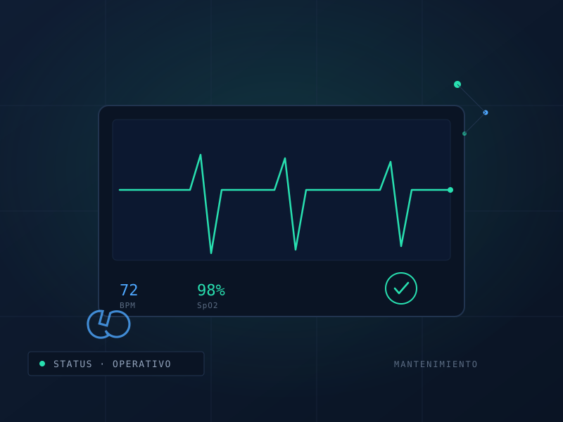

Mantenimiento preventivo y correctivo a equipos médicos, eléctricos, electromecánicos y sistemas de agua o energía, para que tu operación no se detenga.

Revisamos, diagnosticamos y damos mantenimiento a equipo médico e infraestructura crítica. En entornos de salud e industria, una falla no programada significa riesgo para personas y pérdidas económicas: nuestro trabajo es evitar que eso ocurra.
Operamos con planes preventivos calendarizados y respuesta correctiva cuando se requiere, sobre equipo médico, sistemas electromecánicos y redes de agua y energía.
Cada intervención queda documentada, de modo que el área responsable cuenta con trazabilidad para auditorías y para planear el ciclo de vida de sus activos.
Evaluamos el estado de los equipos y sistemas a mantener.
Definimos rutinas preventivas, frecuencias y prioridades.
Intervenciones preventivas y correctivas con personal especializado.
Bitácora, recomendaciones y planeación del siguiente ciclo.
| Tipo de servicio | Preventivo y correctivo |
| Equipos | Médico, eléctrico, electromecánico, agua y energía |
| Entregables | Bitácora, diagnóstico y plan de ciclo de vida |
| Modalidad | Contrato por programa o intervención puntual |
| Cobertura | Nacional, desde la Ciudad de México |
Compártenos el inventario o el tipo de instalación y diseñamos un plan de mantenimiento a la medida.